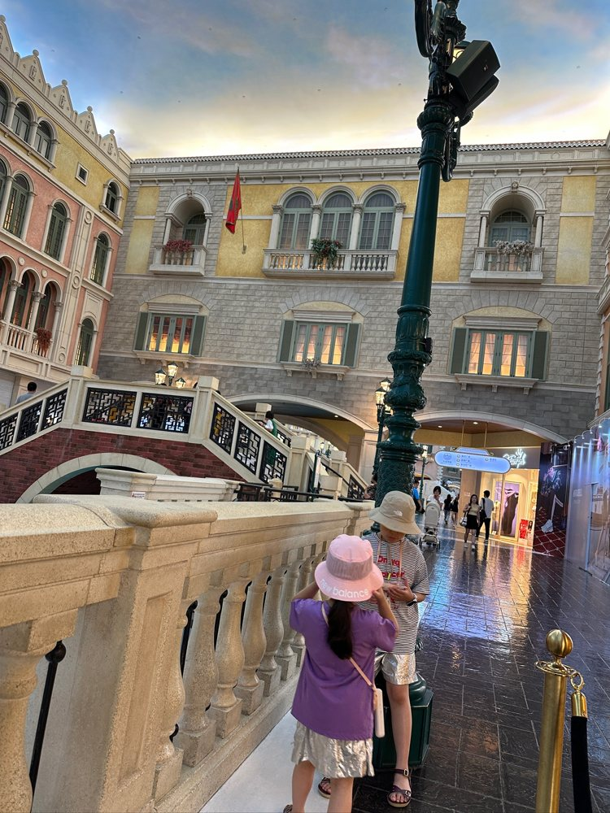

01이번 원본
홍콩 · 숙소·산책
홍콩 리조트의 정원과 바다를 만나다
- 리조트 객실
- 정원 산책
- 해안 산책로
기존에 정리한 객실과 정원, 해안 산책 사진이 여행의 첫 기록입니다. 리조트 일대의 시간과 위치가 함께 남아 있어 오후의 산책 구간을 확인할 수 있습니다.
근거: 사진·동영상 원촬영일·GPS·장면 · 이번 폴더 사진 21장 / 동영상 0개
확인이 필요한 내용
입국일·항공편과 전체 여행 시작 시각은 이 사진들만으로 확인하지 않았습니다.

사진으로 다시 잇는 우리 여행
디즈니의 하루에서 마카오의 운하와 리조트까지
사진 기록 · 2024. 5. 26. — 6. 1.기억을 이어 주는 사진들
홍콩 디즈니 리조트와 파크에서 시작해 대교를 건너 마카오로. 갤럭시의 리조트 휴식과 베네시안의 곤돌라, 실내 놀이 공간과 안다즈, 마지막 공항 장면까지 사진으로 이어 본 두 지역의 가족 여행입니다.
장소와 시간을 연결하다
1. 홍콩 디즈니랜드 · Google 지도
지도가 보이지 않으면 위 장소 링크로 Google 지도를 열어 주세요.
버튼을 누르면 Google 지도에서 해당 장소를 볼 수 있습니다. 전체 동선 링크는 공개 장소를 잇는 Google 추천 경로이며 실제 이동 기록과 다를 수 있습니다.
날짜별로 펼쳐 보는 기억
전체 7개 날짜를 보고 있습니다.
홍콩 · 숙소·산책
기존에 정리한 객실과 정원, 해안 산책 사진이 여행의 첫 기록입니다. 리조트 일대의 시간과 위치가 함께 남아 있어 오후의 산책 구간을 확인할 수 있습니다.
근거: 사진·동영상 원촬영일·GPS·장면 · 이번 폴더 사진 21장 / 동영상 0개
입국일·항공편과 전체 여행 시작 시각은 이 사진들만으로 확인하지 않았습니다.
홍콩 · 테마파크
이번 추가 사진에는 기존 성 앞 사진 이후의 파크 내부 기록이 남아 있습니다. 겨울왕국 테마의 어트랙션 장면과 토이 스토리 구역, 여러 캐릭터와의 만남, 저녁의 성·입구 조명까지 확인됩니다. 같은 구역을 오가는 사진이 있어 한 번만 지나간 직선 코스로 해석하지 않았습니다.
근거: 사진·동영상 원촬영일·GPS·장면 · 이번 폴더 사진 210장 / 동영상 8개
놀이기구 전체 탑승 목록과 대기시간은 단정하지 않습니다. 식별되는 장면과 위치가 있는 구간만 정리했습니다.
홍콩→마카오 · 이동
오전 홍콩 쪽 출입경 구간의 사진과 버스 안 장면 뒤로 마카오 쪽 터미널·버스 사진이 이어집니다. 이후 갤럭시 간판과 로비·객실·식사 장면이 나타나 홍콩에서 마카오로 여행지가 바뀐 날임을 확인할 수 있습니다.
근거: 사진·동영상 원촬영일·GPS·장면 · 이번 폴더 사진 56장 / 동영상 1개
터미널과 버스 이동은 사진·GPS로 확인했으나 세부 노선번호·교통비·모든 환승을 복원하지 않았습니다. 대교 경로와 일반 교통 안내는 참고용입니다.
마카오 · 물놀이·곤돌라
아침 리조트 식사와 수영장 물놀이 장면 다음으로, 베네시안의 실내 운하와 이탈리아풍 건물이 나타납니다. 곤돌라에 앉은 가족 사진으로 운하 체험을 확인할 수 있으며, 이후 코타이 주변 식사와 리조트 휴식 사진으로 이어집니다. 물놀이 원본은 비공개 앨범에 모았습니다.
근거: 사진·동영상 원촬영일·GPS·장면 · 이번 폴더 사진 98장 / 동영상 12개
정확한 입장권 종류·곤돌라 운행시간·객실 번호와 식당의 확정 명칭은 표시하지 않았습니다.
마카오 · 가족 체험·휴식
여러 층의 미끄럼틀·그물과 아케이드가 있는 어린이 놀이 공간에서 사진을 남겼습니다. 갤럭시 실내 장식과 가족 식사, 이동 장면 뒤로 위치가 다른 숙소·객실 사진이 이어집니다. 이후 날짜의 안다즈 간판·로비 장면과 함께 숙소권을 구분했습니다.
근거: 사진·동영상 원촬영일·GPS·장면 · 이번 폴더 사진 89장 / 동영상 9개
놀이 공간의 정확한 시설명과 호텔 체크인 시각은 확정하지 않았습니다. 스튜디오시티 등 다른 리조트 시설로 임의 지정하지 않았습니다.
마카오 · 숙소·휴식
안다즈 마카오 간판과 로비·식사 공간, 실내 수영장에서 남긴 사진이 확인됩니다. 이 날짜가 없는 공유 사진은 비슷한 장면이라는 이유로 이날 일정에 배정하지 않았습니다. 가족의 휴식과 물놀이 사진은 비공개 상세 앨범에서 볼 수 있습니다.
근거: 사진·동영상 원촬영일·GPS·장면 · 이번 폴더 사진 18장 / 동영상 6개
공유·내보내기 날짜를 촬영일로 사용하지 않습니다. 이름이 확인되지 않은 개별 식당은 리조트 식사 장면으로만 기록합니다.
마카오 · 공항 이동
아침 숙소 식사와 로비, 짐을 챙긴 장면 다음으로 코타이를 지나 공항에 도착한 사진이 이어집니다. 공항 대기·식사·비행기와 기내 사진이 마지막으로 남아 있습니다. 공항 GPS와 장면이 함께 맞아 마카오 출발 구간으로 정리했습니다.
근거: 사진·동영상 원촬영일·GPS·장면 · 이번 폴더 사진 87장 / 동영상 2개
정확한 귀국 항공편과 실제 도착·귀가 시각은 단정하지 않았습니다.
우리가 머문 장소들
전체 7곳
정원·해안 산책과 리조트 휴식을 남긴 구간입니다.
사진·GPS 확인성 앞뿐 아니라 겨울왕국·토이 스토리 구역, 캐릭터·야경 장면이 추가로 확인됩니다.
사진·GPS 확인두 지역 터미널의 위치와 버스 사진으로 이동 순서를 정리했습니다.
사진·GPS·공식 지리 맥락간판과 실내 장식, 가족 식사·물놀이·어린이 놀이 공간 기록이 있습니다.
사진·GPS 확인실내 운하와 곤돌라에 앉은 가족 사진이 남아 있습니다.
사진·GPS 확인간판·로비·객실 장면과 주변 위치를 함께 확인했습니다.
간판·사진·GPS 확인6월 1일 공항 대기와 비행기·기내 장면으로 이어지는 구간입니다.
사진·GPS 확인선별한 대표 장면만 함께 나눕니다
이전에는 디즈니 리조트 사진 30장만 있어 이틀의 일부 구간만 보였습니다. 추가 자료로 홍콩 파크 내부와 마카오 구간을 함께 정리했습니다. 마카오 구시가지·세나도광장·성바울 유적 등의 방문 증거는 없어 코스에 넣지 않았습니다. Google 지도의 경로는 일반 추천 경로이며 실제 가족의 이동 항적·거리·소요시간을 뜻하지 않습니다.
촬영된 장면과 촬영 시각·위치가 함께 맞는 구간을 우선 정리했습니다. 날짜만 있는 사진이나 기존 여행기로 보완한 부분은 별도로 표시했습니다. 사진 없는 시간을 채워 전체 이동을 추정하지 않습니다.
사진은 원촬영 시각과 시간대, 동영상은 원촬영 날짜 정보를 우선했습니다. 공유·내보내기 날짜는 여행 날짜로 사용하지 않았습니다. 기내 GPS는 출발지에 남을 수 있습니다. 가까운 장소는 사진 속 간판·풍경과 함께 확인했고, 교통수단·탑승 완료·정확한 숙소명은 증거가 있을 때만 기록합니다.
사진의 개수는 현재 백업 폴더 기준입니다. 사진 기록일은 전체 여행 기간과 같지 않을 수 있습니다.
공식 안내는 장소 이름과 위치 맥락 확인용이며 가족의 실제 방문은 사진·메타데이터 또는 명시한 기존 여행기 근거로 판단했습니다.